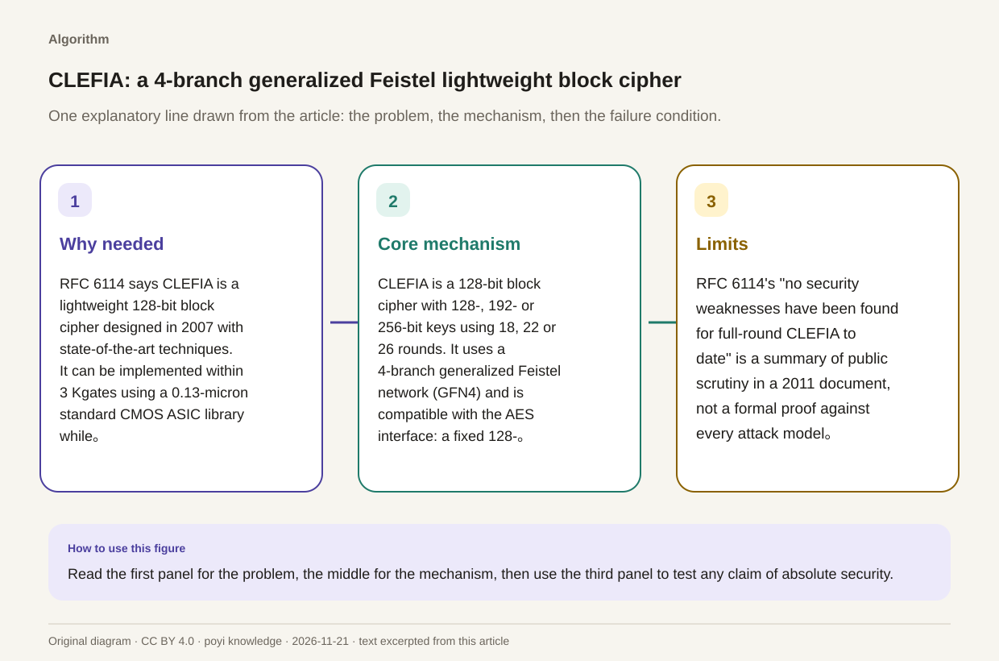
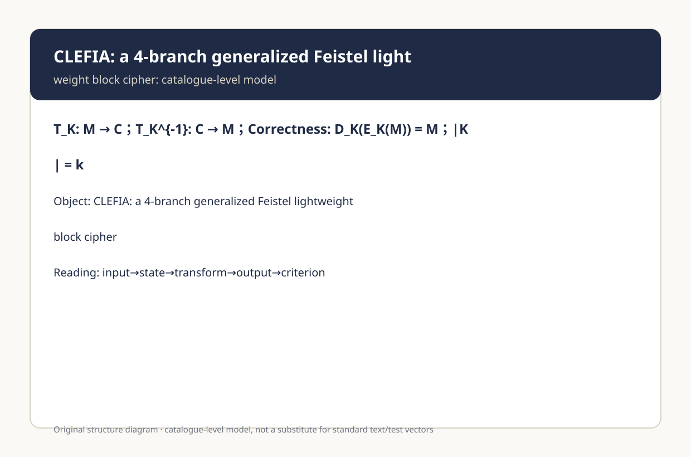

Principles
Algorithm: CLEFIA (CLEFIA 轻量级分组密码). CLEFIA is a 128-bit block cipher with 128-, 192- or 256-bit keys using 18, 22 or 26 rounds. It uses a 4-branch generalized Feistel network (GFN4) and is compatible with the AES interface: a fixed 128-bit block and three key lengths. The data randomizing part splits the 128-bit plaintext into four 32-bit words P0..P3. Encryption whitens P1 and P3 with WK0 and WK1, runs GFN4, and whitens the output with WK2 and WK3:
T0 = P0
T1 = P1 XOR WK0
T2 = P2
T3 = P3 XOR WK1
Y = GFN4(RK0..RK(2r-1), T)
C0 = Y0
C1 = Y1 XOR WK2
C2 = Y2
C3 = Y3 XOR WK3
Each round of GFN4,r is:
T1 = T1 XOR F0(RK(2i), T0)
T3 = T3 XOR F1(RK(2i+1), T2)
(T0, T1, T2, T3) = (T1, T2, T3, T0)
After r rounds the output is T3 | T0 | T1 | T2. Decryption uses GFNINV4,r with the round keys in reverse order and a right word rotation after each round, then removes whitening with WK0 and WK1. F0 and F1 are the two 32-bit round functions. F0 computes T = RK XOR x, sends the four bytes of T through S0, S1, S0 and S1, and multiplies by M0; F1 sends them through S1, S0, S1 and S0 and multiplies by M1:
F0: T = RK XOR x; T0=S0(T0), T1=S1(T1), T2=S0(T2), T3=S1(T3); y = M0(T)
F1: T = RK XOR x; T0=S1(T0), T1=S0(T1), T2=S1(T2), T3=S0(T3); y = M1(T)
S0 and S1 are two 8-bit S-boxes with 256 entries each. S0 is based on four 4-bit S-boxes, and S1 is based on inversion over GF(2^8); the specification's example is S0(0xAB)=0x7E. M0 and M1 are 4x4 diffusion matrices:
M0:
y0 = T0 ^ 02*T1 ^ 04*T2 ^ 06*T3
y1 = 02*T0 ^ T1 ^ 06*T2 ^ 04*T3
y2 = 04*T0 ^ 06*T1 ^ T2 ^ 02*T3
y3 = 06*T0 ^ 04*T1 ^ 02*T2 ^ T3
M1:
y0 = T0 ^ 08*T1 ^ 02*T2 ^ 0A*T3
y1 = 08*T0 ^ T1 ^ 0A*T2 ^ 02*T3
y2 = 02*T0 ^ 0A*T1 ^ T2 ^ 08*T3
y3 = 0A*T0 ^ 02*T1 ^ 08*T2 ^ T3
Multiplication is in GF(2^8) with polynomial z^8 + z^4 + z^3 + z^2 + 1 (low eight bits 0x1D). The key schedule has three variants. A 128-bit key first uses GFN4,12 with 24 CON constants to generate the 128-bit intermediate L, then produces WK and 36 RK values:
L = GFN4,12(CON_128[0..23], K0..K3)
WK0..WK3 = K0..K3
for i = 0..8:
T = L XOR (CON_128[24+4i] | CON_128[25+4i] | CON_128[26+4i] | CON_128[27+4i])
L = Sigma(L)
if i is odd: T = T XOR K
RK[4i..4i+3] = T
Sigma is the 128-bit DoubleSwap bit permutation:
Y = Sigma(X) = X[7..63] | X[121..127] | X[0..6] | X[64..120]
Bit 0 is the most significant bit. For 192- and 256-bit keys, KL and KR are formed first: for 192 bits KR = K4|K5|~K0|~K1, and for 256 bits KR = K4|K5|K6|K7. GFN8,10 with 40 CON constants then generates LL and LR:
LL | LR = GFN8,10(CON_k[0..39], KL0..KL3, KR0..KR3)
WK = KL XOR KR
for i = 0..10 (192) or 0..12 (256):
if i mod 4 = 0 or 1:
T = LL XOR CON_k[40+4i..43+4i]; LL = Sigma(LL); if i is odd: T = T XOR KR
else:
T = LR XOR CON_k[40+4i..43+4i]; LR = Sigma(LR); if i is odd: T = T XOR KL
RK[4i..4i+3] = T
GFN8,r runs r rounds over eight 32-bit words, updating T1, T3, T5 and T7 with F0, F1, F0 and F1 and rotating the eight words left by one position each round. It is used only in the 192/256-bit key schedule, not in the data randomizing part. The CON_k constants are generated from P=0xB7E1 and Q=0x243F:
CON_k[2i] = (T_i XOR P) | (~T_i <<< 1)
CON_k[2i+1] = (~T_i XOR Q) | (T_i <<< 8)
T_(i+1) = T_i * (0x0002^-1)
Multiplication is in GF(2^16) with polynomial z^16+z^15+z^13+z^11+z^5+z^4+1. The 128/192/256-bit schedules need 60/84/92 constants, with T_0 initialized to 0x428A, 0x7137 and 0xB5C0.

Why it matters
RFC 6114 says CLEFIA is a lightweight 128-bit block cipher designed in 2007 with state-of-the-art techniques. It can be implemented within 3 Kgates using a 0.13-micron standard CMOS ASIC library while offering 128/192/256-bit security and high software and hardware performance; many lightweight algorithms sacrifice security or speed, and CLEFIA aims at a balance. It is proposed for ISO/IEC 29192-2 and the CRYPTREC revision of Japan's e-Government recommended ciphers.
RFC 6114 Section 7 says no security weakness has been found for full-round CLEFIA in public scrutiny, neither by the designers nor by independent cryptographers. This is a 2011 RFC assessment, not a formal proof against every attack model.
Applications
CLEFIA's standardization position is ISO/IEC 29192-2. Edition 2 (2019) lists CLEFIA with PRESENT and LEA as block ciphers suitable for lightweight cryptographic implementations: PRESENT has a 64-bit block and 80/128-bit keys; CLEFIA has a 128-bit block and 128/192/256-bit keys; LEA also has a 128-bit block and 128/192/256-bit keys. The ISO page shows that the edition was confirmed as current in March 2025.
RFC 6114 Appendix A gives three vectors, all with plaintext 000102030405060708090A0B0C0D0E0F:
128-bit key = FFEEDDCCBBAA99887766554433221100
ciphertext = DE2BF2FD9B74AACDF1298555459494FD
192-bit key = FFEEDDCCBBAA99887766554433221100F0E0D0C0B0A09080
ciphertext = E2482F649F028DC480DDA184FDE181AD
256-bit key = FFEEDDCCBBAA99887766554433221100F0E0D0C0B0A090807060504030201000
ciphertext = A1397814289DE80C10DA46D1FA48B38A
Appendix B also gives the full 128-bit intermediates: L=8F89A61B9DB9D0F393E65627DA0D027E, WK0..3=FFEEDDCC BBAA9988 77665544 33221100, and all 36 32-bit RK0..35 values. It also lists the whitened state and each round's F-function key-add, S and M values. The implementation reproduces these values, so it checks the key schedule and round functions rather than only the final ciphertext.

Limits & attacks
RFC 6114's "no security weaknesses have been found for full-round CLEFIA to date" is a summary of public scrutiny in a 2011 document, not a formal proof against every attack model, and it does not guarantee that no better analysis will appear. This article does not expand it into an absolute security claim, and it does not cite unverified attack papers to claim that CLEFIA has been broken.
CLEFIA's deployment position needs to be stated carefully: it is a lightweight algorithm designed by Sony, published in 2007, and proposed for ISO/IEC 29192-2 and the CRYPTREC revision of Japan's e-Government recommended ciphers; ISO/IEC 29192-2:2019 formally lists it with PRESENT and LEA as lightweight block ciphers. This article does not present it as a default algorithm for general protocols; being standardized does not mean it is available by default in every protocol.
At the implementation level, this article's teaching code performs byte-indexed lookups in S0/S1 and 32-bit XORs and GF(2^8) multiplications and is not constant-time; caches and timing may leak key-dependent access patterns. It does not generate keys and implements no mode of operation, IV management, padding, integrity protection or side-channel defence, so it must not be used to protect real data. CLEFIA defines only a block cipher; the protocol layer must handle those matters.
History
The CLEFIA algorithm was published in 2007 and designed by Sony for lightweight cryptography on resource-constrained devices. RFC 6114 was published by M. Katagi and S. Moriai (Sony Corporation) in March 2011 with Informational category as an Independent Submission; it provides the algorithm, components, key schedule, test vectors and intermediate values.
RFC 6114 says CLEFIA has been publicly scrutinized since publication with no reported security weaknesses, and was proposed for ISO/IEC 29192-2 and the CRYPTREC revision of Japan's e-Government recommended ciphers. ISO/IEC 29192-2:2019 Edition 2 lists CLEFIA with PRESENT and LEA as three block ciphers suitable for lightweight implementations, and that edition was confirmed as current in March 2025.
This article's CLEFIA entity is the 128-bit block cipher only; PRESENT, LEA, AES and Camellia are separate entities, and ISO/IEC 29192-2 is the standardization document that lists CLEFIA with PRESENT and LEA, not the algorithm itself.
Worked example & verification
Worked example
Take one published or standard test vector, record the input, the ordered steps and the byte-exact output, then compare with an independent implementation. Where no citable numeric vector is available, the entry records only structural steps and does not invent an output.
References
- Wikipedia search entry for CLEFIA 轻量级分组密码. https://zh.wikipedia.org/w/index.php?search=CLEFIA%20%E8%BD%BB%E9%87%8F%E7%BA%A7%E5%88%86%E7%BB%84%E5%AF%86%E7%A0%81
- Handbook of Applied Cryptography (Menezes, van Oorschot, Vanstone). https://www.cacr.math.uwaterloo.ca/hac/